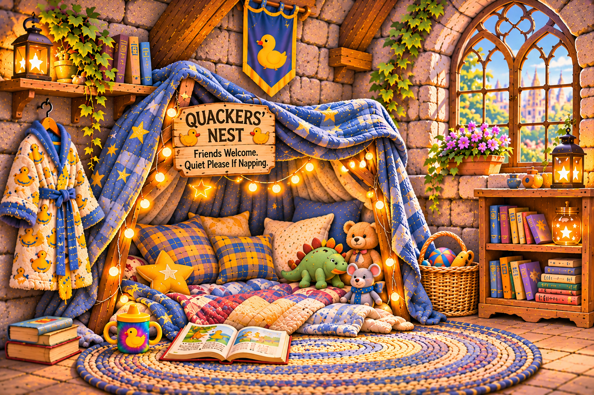

Pillows and quilts form a soft sanctuary for Quackers, his treasured toys, books, and the occasional visiting friend. A tiny duck-print robe hangs nearby. The rainbow sippy cup is always accounted for.
Here, fortress discipline yields to bedtime stories, shared secrets, and naps of unpredictable duration. The Navy Squeals refer to this as Code Nap. Quackers calls it Tuesday.
If Quackers is sleeping, please whisper. If a friend needs comforting, the rules may be reconsidered immediately.